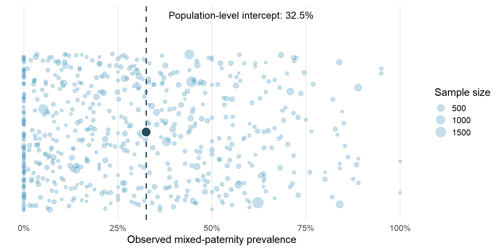
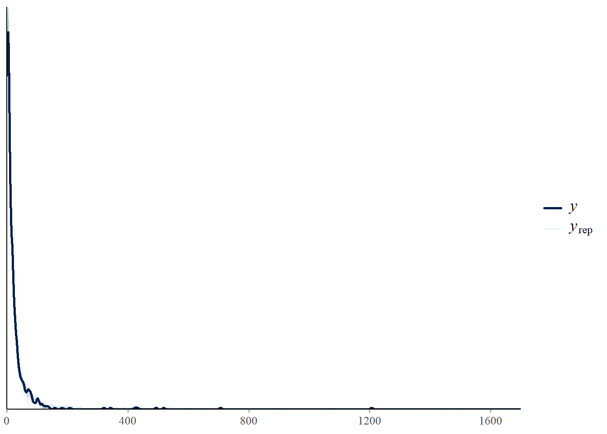
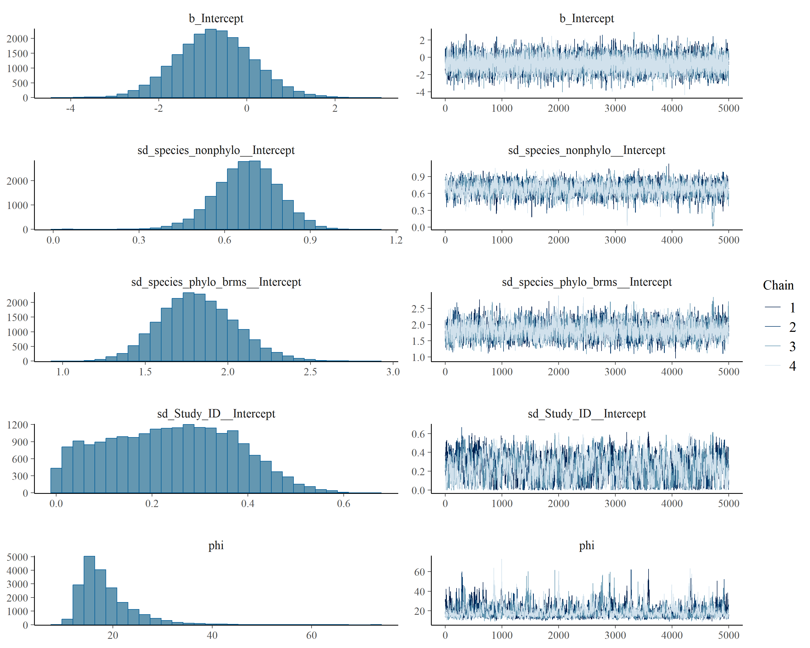

Code
library(tidyverse)
library(brms)
library(posterior)
library(bayesplot)
library(loo)
options(mc.cores = parallel::detectCores())This section presents the intercept-only beta-binomial phylogenetic model used to estimate overall mixed-paternity prevalence across birds. The model accounts for study identity, non-phylogenetic species-level variation, and phylogenetically structured species-level variation.
The R packages required for model fitting and diagnostics.
library(tidyverse)
library(brms)
library(posterior)
library(bayesplot)
library(loo)
options(mc.cores = parallel::detectCores())data_overall_study <- readRDS("data/data_overall_study.rds")
phylo_mat <- readRDS("data/phylo_mat.rds")| Observations | Studies | Species | Total broods | Mixed-paternity broods | Raw prevalence (%) |
|---|---|---|---|---|---|
| 619 | 554 | 375 | 46249 | 16089 | 34.79 |
Because brood-level paternity data are expected to exhibit substantial extra-binomial heterogeneity across references, populations, and species, we modelled mixed-paternity prevalence using beta-binomial generalised linear mixed-effects models with a logit link:
\[y_i \sim \mathrm{BetaBinomial}(n_i, \mu_i, \phi)\]
where \(y_i\) is the number of broods with mixed paternity, \(n_i\) is the total number of broods genotyped, \(\mu_i\) is the expected mixed-paternity prevalence, and the precision parameter \(\phi\) describes extra-binomial variation among study units.
The linear predictor was modelled as:
\[\mathrm{logit}(\mu_i) = \alpha + \mathbf{X}_i \boldsymbol{\beta} + u_{\mathrm{reference}[i]} + u_{\mathrm{species}[i]} + u_{\mathrm{phylo}[i]}\]
where \(\alpha\) is the intercept, \(\mathbf{X}_i \boldsymbol{\beta}\) represents fixed biological and methodological moderators, and \(u_{\mathrm{reference}}\), \(u_{\mathrm{species}}\), and \(u_{\mathrm{phylo}}\) represent reference-level, non-phylogenetic species-level, and phylogenetically structured random effects, respectively.
The intercept-only model estimated the population-level intercept while quantifying study-level, non-phylogenetic species-level, and phylogenetically structured species-level variation. Its inverse-logit transformation is the expected prevalence when all random effects are set to zero; it is not a marginal average across the observed studies or species.
model_overall_study <- brm(
n_mixed_broods | trials(n_total_broods) ~
1 +
(1 | Study_ID) +
(1 | species_nonphylo) +
(1 | gr(species_phylo_brms, cov = phylo_mat)),
family = beta_binomial(link = "logit"),
data = data_overall_study,
data2 = list(phylo_mat = phylo_mat),
chains = 4,
cores = 4,
iter = 10000,
warmup = 5000,
control = list(adapt_delta = 0.99, max_treedepth = 15),
seed = 123
)knitr::include_graphics(
"Figures/model_diagnostics/overall_prevalence_intercept_plot.png"
)
model_overall_study <- readRDS("models/model_overall_study.rds")
summary(model_overall_study) Family: beta_binomial
Links: mu = logit
Formula: n_mixed_broods | trials(n_total_broods) ~ 1 + (1 | Study_ID) + (1 | species_nonphylo) + (1 | gr(species_phylo_brms, cov = phylo_mat))
Data: data_overall_study (Number of observations: 619)
Draws: 4 chains, each with iter = 10000; warmup = 5000; thin = 1;
total post-warmup draws = 20000
Multilevel Hyperparameters:
~species_nonphylo (Number of levels: 375)
Estimate Est.Error l-95% CI u-95% CI Rhat Bulk_ESS Tail_ESS
sd(Intercept) 0.68 0.11 0.45 0.88 1.00 2213 3428
~species_phylo_brms (Number of levels: 375)
Estimate Est.Error l-95% CI u-95% CI Rhat Bulk_ESS Tail_ESS
sd(Intercept) 1.82 0.23 1.40 2.30 1.00 2604 3966
~Study_ID (Number of levels: 554)
Estimate Est.Error l-95% CI u-95% CI Rhat Bulk_ESS Tail_ESS
sd(Intercept) 0.24 0.13 0.01 0.48 1.00 785 1498
Regression Coefficients:
Estimate Est.Error l-95% CI u-95% CI Rhat Bulk_ESS Tail_ESS
Intercept -0.73 0.87 -2.43 1.00 1.00 11802 12348
Further Distributional Parameters:
Estimate Est.Error l-95% CI u-95% CI Rhat Bulk_ESS Tail_ESS
phi 18.57 5.57 12.07 32.96 1.00 931 1424
Draws were sampled using sampling(NUTS). For each parameter, Bulk_ESS
and Tail_ESS are effective sample size measures, and Rhat is the potential
scale reduction factor on split chains (at convergence, Rhat = 1).| Parameter | Estimate | Lower 95% CrI | Upper 95% CrI |
|---|---|---|---|
| Intercept (logit scale) | -0.732 | -2.426 | 1.003 |
| Population-level intercept prevalence (%) | 32.472 | 8.119 | 73.156 |
| Study-level SD | 0.238 | 0.013 | 0.484 |
| Non-phylogenetic species-level SD | 0.678 | 0.451 | 0.885 |
| Phylogenetic species-level SD | 1.820 | 1.395 | 2.305 |
| Beta-binomial precision (phi) | 18.568 | 12.075 | 32.961 |
We quantified the phylogenetic signal in between-species variation as the proportion of species-level variance attributable to the phylogenetically structured random effect:
\[ \nu = \frac{\sigma^2_{\mathrm{phylo}}} {\sigma^2_{\mathrm{phylo}} + \sigma^2_{\mathrm{nonphylo}}} \]
where \(\sigma^2_{\mathrm{phylo}}\) is the variance of the phylogenetically structured species-level random effect and \(\sigma^2_{\mathrm{nonphylo}}\) is the variance of the non-phylogenetic species-level random effect.
The table below summarises the relative contribution of the phylogenetic and non-phylogenetic species-level variance components in the overall model.
| Statistic | Estimate | Lower 95% CrI | Upper 95% CrI |
|---|---|---|---|
| Phylogenetic signal (ν) | 0.87 | 0.74 | 0.96 |
pp_check(model_overall_study)Using 10 posterior draws for ppc type 'dens_overlay' by default.
| Value | n |
|---|---|
| Non-divergent | 20000 |
png
2 #| label: show-overall-traceplot
#| echo: false
#| out-width: "100%"
knitr::include_graphics(
"Figures/model_diagnostics/model_overall_traceplots.png"
)